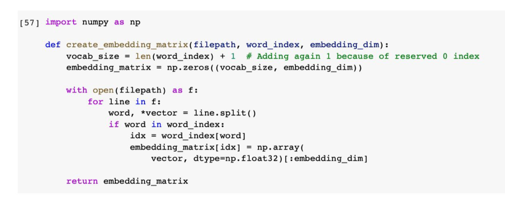

Twitter: Hate Speech and Offensive Language
Description of the dataset
The dataset consists of around 25k tweets from social media platform twitter for analysis of hate-speech keywords in tweets. A hate speech lexicon is used to store the words and phrases identified as hate speech. These tweets are labeled into three categories based on the terms and phrases from the lexicon. The three categories are, the tweets containing offensive language, the ones containing hate-speech and the ones containing neither. The field “count” in the dataset represents the number of users who identified a particular tweet into one of the three categories. “Hate_speech” represents the number of users judged the tweet as hate-speech. “Offensiv_language” represents the number of users who identified the tweet as offensive and “neither” represents the number of users identifying the tweet as neither offensive nor hate-speech. The column “class” represents the majority of users who identified a tweet in a particular category. The column “tweet” represents the tweet.
Following can be determined from the dataset as the values of the “class” column.
0 - hate speech
1 - offensive
2 - neither
Data Gathering
We begin our analysis by reading the .csv file and storing our required features(class, tweets) in two variables.
Then we split our data into training and testing set in order to evaluate the accuracy and to check if our data generalizes well. It checks whether the model is able to perform well on the data that it has not seen before. This is a way to check for overfitting.
Overfitting is basically when the model is fitted too well on the training data. We essentially want to avoid that as this would account for large accuracy in the training data but very little accuracy in the testing data.
Feature Generation through Glove
We have used word embedding to represent our words as dense vectors. Text is considered to be a form of sequential data, for this project we will be converting our words to vectors for each tweet, and process the words for each tweet to get a fixed size word vector per tweet.
We will be using word embeddings, which basically maps the sentence meaning to a geometrical space. The geometric space thus created is called embedding space. This method maps the semantically similar words closed on the embedding space like numbers.
For this project we will be using pre trained word model created by using Glove which can be directly used in our model for training the data.
We need to tokenize our data into a format that can be used by word embeddings. We have used the tokenizer utility class which vectorizes every word of each tweet into a list of integers. Each of these integers maps to a value in the dictionary that encodes the entire corpus with the keys in the dictionary being the vocabulary terms themselves. The parameter numWords sets the size of the vocabulary. The indexing is ordered after the most common words in the text. The index 0 is reserved and is not assigned to any word as it is used for padding.
Each tweet consists of words of different lengths. In order to counter this, pad_sequence() is used which pads the sequence of words with zeros. Additionally , a maxlen parameter is added to specify the length of each sequence.

The first value represents the index in the vocabulary. We notice here that resulting feature matrix contains mostly zeros since we are dealing with mostly short sentences.
Glove achieves Feature Vector generation with a co-occurrence matrix and by using matrix factorization. Glove is chosen as it is faster to compute and provide more accurate results.

Following is the function to retrieve embedded matrix that gives a fixed length feature vector per tweet. We can use the generated embedded matrix for training.
Classification with Sequential Model (Neural Network)
We will be using the Sequential Model of Keras for the data prediction. Keras is a deep learning and neural networks API which is capable of running on top of Tensorflow(Google), Theano or CNTK(Microsoft). Keras supports two main types of models, the Sequential model API and the function API.
For this project, we will be considering the Sequential model API. we are considering the Sequential model API of Keras as deep neural networks perform best when we have a very large number of samples, and since we are dealing with a dataset with a sample size of around ~25k, the neural network should give the best results.
The sequential model is a linear stack of layers with large variety of layers available for different purposes. The most commonly used layer is the dense layer which is a regular densely connected neural network layer with all the weights and biases.
In order to build the model, we first gather the input dimension of our feature vectors. This happens only in the first layer as the following layers can do automatic shape reference.
Before we can start training our model, we need to configure our learning process. This is done by .compile() method. This method specifies the optimizer and the loss functions.
We have also used a .summary() function of Keras to give an overview of the model and the number of parameters available for training.
Now since we have the embedded layer, now we will take the output of the embedded layer and plug it into the dense layer. In order to do that we will put a GlobalMaxPool1D layer in between that prepares the sequential input for the dense layer.
In the case of Max Pooling we take the maximum values of all the features in the pool for each feature dimension.
Now that we have our model created, we can begin training the data with the .fit() method. The training in neural networks is an iterative process and thus we need to specify the number of iterations we want our model to be training on. Those completed iterations are called epochs.
Another parameter to specify is batch_size. The batch_size determines how many samples we want to use in one epoch, which means the number of samples used in one forward/backward pass.
The .evaluate() method is used to evaluate the accuracy of our model. We will also be using a helping function from Keras to visualize the loss and accuracy for the training and testing data based on the History callback. This callback is automatically applied to each Keras model, records the loss and additional metrics that are added in the .fit() method. At this point, we are only interested in the accuracy. We have used the matplotlib plotting library.
As we can see, we have obtained a training accuracy of 0.7763 and a testing accuracy of 0.7684.
Since the word embeddings are not additionally trained, it is expected to be lower. Upon using the embeddings to be trained by using trainable to be true we get the following results.
Hence we can see that it is most effective to allow the embeddings to be trained. When dealing with large datasets, it can boost the training process to be much faster than without.
K-fold cross validation with k=6 folds
For k-fold cross validation, we have considered the StratifiedKFold which is a variation of K-fold. First StratifiedKFold shuffles the data, after that splits the data into n_splits parts. Now it will use each part as a test set. We use Precision, recall, and F1 score to measure the accuracy of our model. Following are the screenshot of the code and the resulting precision, recall and f1 scores for each fold.
Clustering
Clustering is performed in order to divide the data points into number of clusters so that the data points in one group are more similar to the data points in the same group than in the other group. The goal of this analysis is done is done using K-means clustering to identify the category of the tweets based on the wordings used. Certain words that are used in the “hate-speech” category are also evident in the “offensive” category. This is also evident from the overlapping of the blue and green zones. Our results indicates that it is impractical to have a unique approach to define and detect abusive language. As different communities have different dialogues, the model suitable for one community may discriminate against others. It is not possible to classify the tweets containing certain words as abusive or hate-speech. As described in the paper, certain terms are used by some communities on online platforms such as “n*gga” are not considered offensive within the communities. Certain other terms that are offensive to an older age-group are used casually within the young generation. Due to such boundary conditions, our model does classify the categories distinctively.